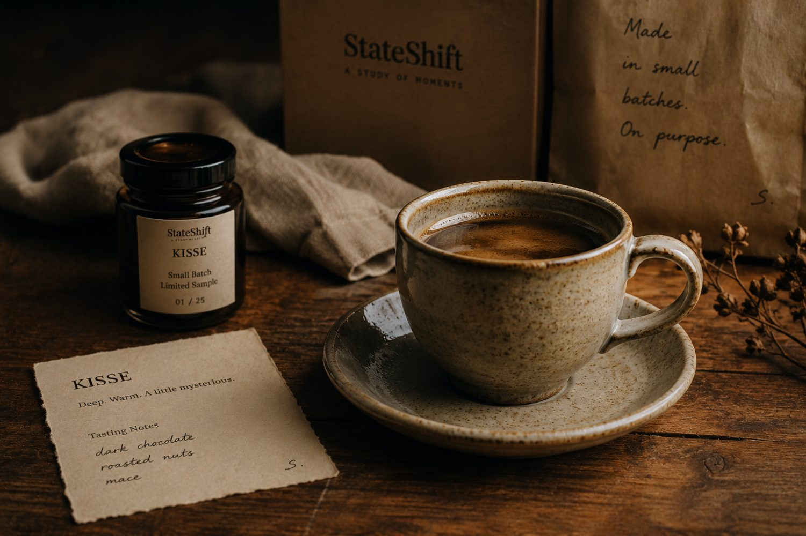

The Collection
swipe →
So we made one for each.
Sehar for the morning. Rukh for the focus. Kisse for the evening table. Lamhe for the hour that belongs to nobody else.
Most of us get shifted. Wake, work, reply, scroll, sleep, repeat, and somehow it's December.
Three minutes, taken on purpose, are enough to take a day back.
Coffee is only the tool. The shift is the point.
The day hasn't decided what it will be yet. For a few minutes, neither have you. That's not fog. That's a beginning, waiting to be chosen.
Ten open tabs, three half-thoughts, one restless mind. What you need isn't more speed. It's a still point to move from.
Some conversations only start after the day has ended. The best ones outlast whatever's on the table between you.
A blanket, a book, rain if you're lucky. The quiet art of being gently returned to yourself.
Sehar for the morning. Rukh for the focus. Kisse for the evening table. Lamhe for the hour that belongs to nobody else.
Every one of them started the same way. Badly.
How they're madeDozens of sittings. One question per cup. Every failure written down. What survives is a blend that earned its place in your day.

The parts that never made it onto a label.
From the journal"The first tester was family, and family is merciless. Early cups were pronounced plain, masala, once memorably half-cooked."
Read the story failures included, honestlyThere's a person at the other end of every message, usually mid-experiment.
Try the Sampler